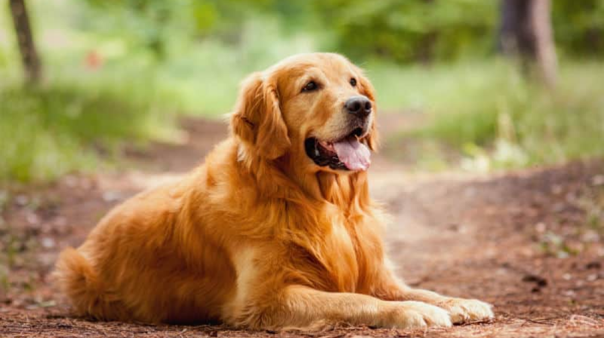

Como cuidar do seu Golden Retriever?
1° Dica: Leve ao veterinário
Assim como os humanos, nossos bichinhos também precisam de assistência médica. Assim, levá-los ao veterinário e estar em dia com as vacinas é algo muito importante na vida do Golden Retriever. A raça é propensa a desenvolver diversas doenças ao longo da vida, como a displasia coxofemoral, causada pela má formação das articulações, por isso, é preciso levá-los ao veterinário ao menos duas vezes ao ano.
2° Dica: Passeie com eles
Os Goldens são conhecidos por seres robustos e ativos. Por isso, é necessário que eles sejam diariamente estimulados a praticar atividades físicas, seja brincadeiras ou caminhadas, por, pelo menos, 45 minutos. Caso contrário, ele pode ficar muito estressado.
3° Dica: Cuidado com a higiene dos Retrievers
Banhos a cada dez dias, escovação de pelos mortos, atenção a carrapatos são dicas básicas que se aplicam a todos os cachorros. Por isso, antes de adotar qualquer animalzinho, certifique-se de que você pode diariamente atender às necessidades básicas do bichinho desejado.
4° Dica: Castre seu Golden
Apesar de ser um assunto controverso, a castração pode evitar certo tipos de comportamentos indesejados, como a agressividade, além de evitar possíveis tipos de câncer nos testículos e nos úteros.